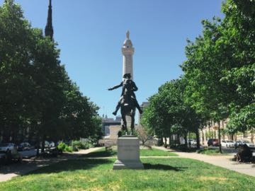
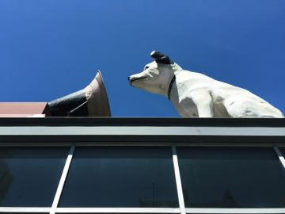

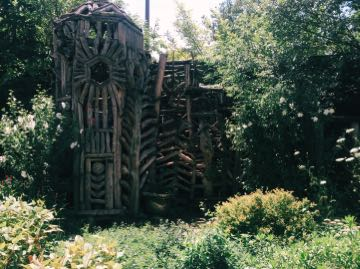
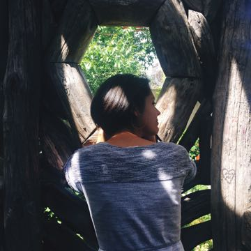
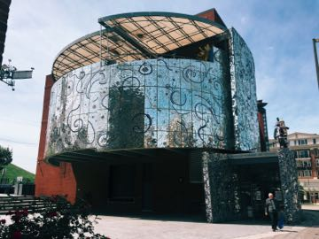

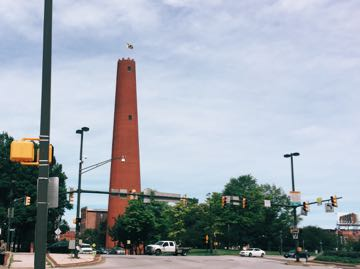
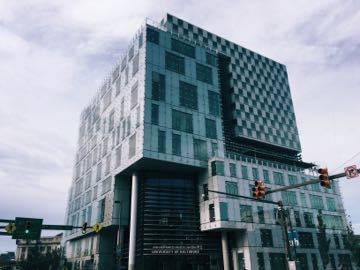
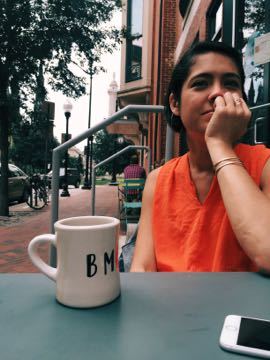
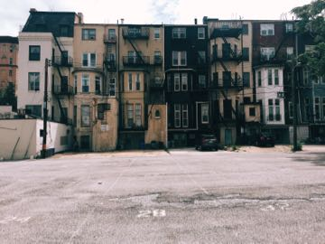
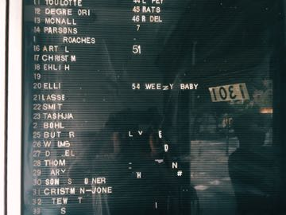
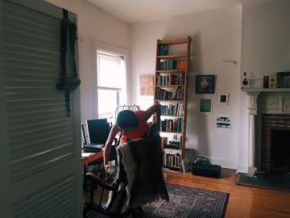
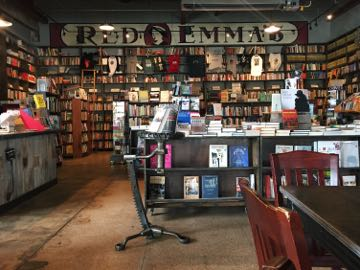
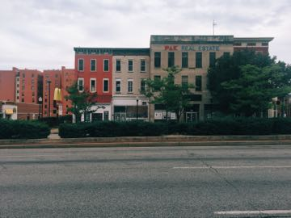
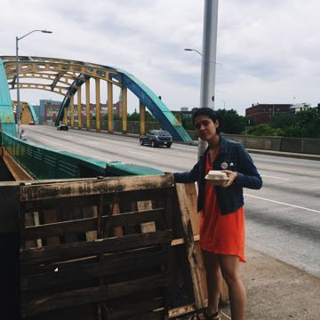

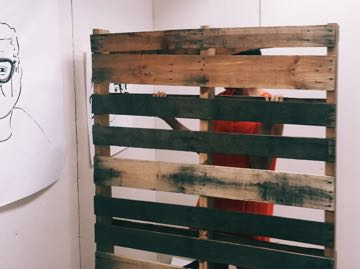
July 2016
With Baltimore I add another stamp to my passport of fascinating places that I’d previously overlooked. Keeping my expectations chilled and out of direct sunlight keeps has been a winning strategy for unexpected delight.
Note on the following: I’ve spent 2.5 days here and no idea what I’m talking about.
It’s been many years since I’ve been to the non-New York east coast. Visiting Baltimore has been a useful refresher. I found myself genuinely blown away on the first night by the very old buildings. The oldest building in California was built in 1994, the oldest in Baltimore was in the seventeen hundreds? Not exactly sure, but the city celebrates its 287th birthday this year.
I bought a book on row houses on a whim the day before I flew out. Baltimore appears to have a special claim on the structures in that they have doubled down on them for centuries at this point. They’re everywhere, they vary dramatically in style, and they are charming. Charm city and all that.
I spend an inordinant amount of time thinking about the way cities are built and how people interact with them when I travel. Baltimore is really crushing it on urban fabric. Downtown and Mt. Vernon are very walkable, high density, there is a lot of variety and interest in the row houses and stately old buildings representing different architectual schools. There is also a shocking lack of restaurants, bars, cafes, and shops. There are a few, but nothing like what you’d expect for such a dense, beautiful area. Also everyone drives.
Planes, though.
Baltimore is a composed of planes and blocks rhythmically stacked in beautiful compositions that change dramatically as you walk around the city. Abandoned blocks reveal the backs of row houses that sea saw in depth and height while maintaining a consistent form. Steeples, towers, and monuments and are dotted throughout the grid and always in view one way or another. Bushy green trees, angled roofs, detailed facades, balconies, brick sidewalks, and fire escapes provide a rich texture on top of the rigid stateliness of the buildings.
People say places like San Francisco are beautiful. Compared to somewhere like Baltimore San Francisco feels surburban and private. The literal density of San Francisco is much higher than Baltimore’s, but the streets and neighborhoods lack the depth and stature of Baltimore which echos a much more European notion of density and place. Big fan. Just needs 100x cafes and a good transit situation.